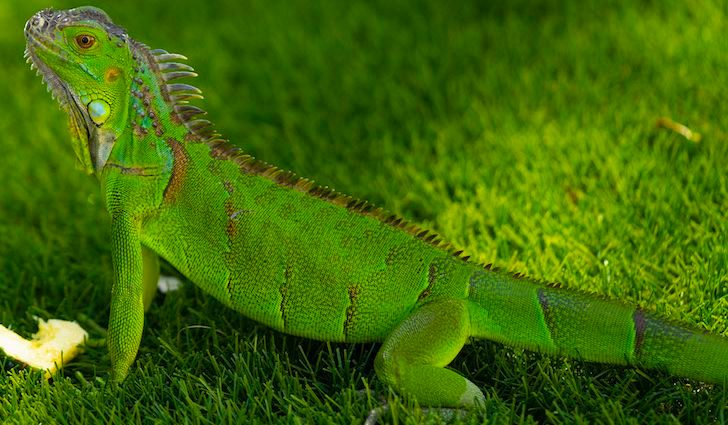
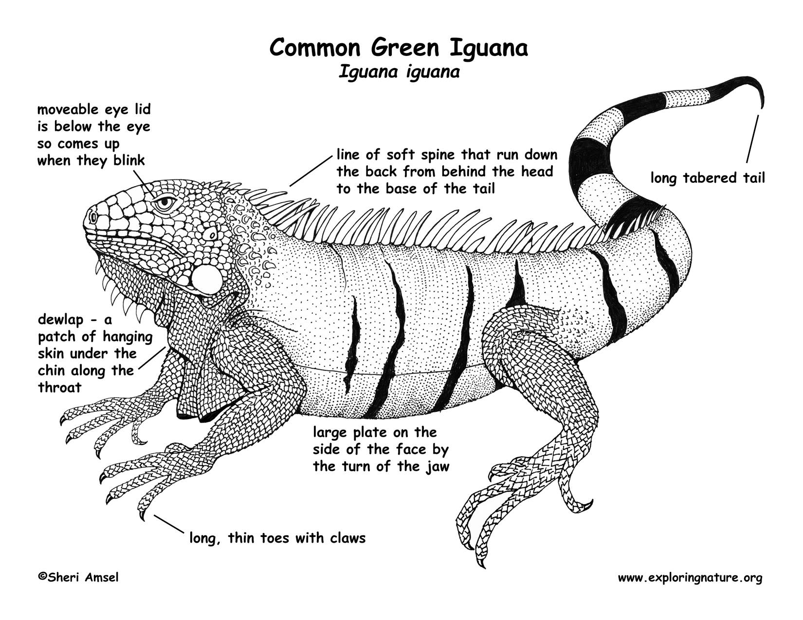
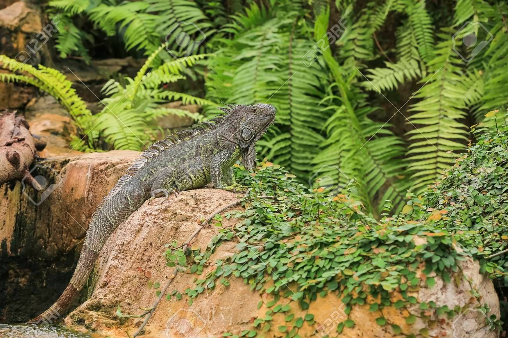
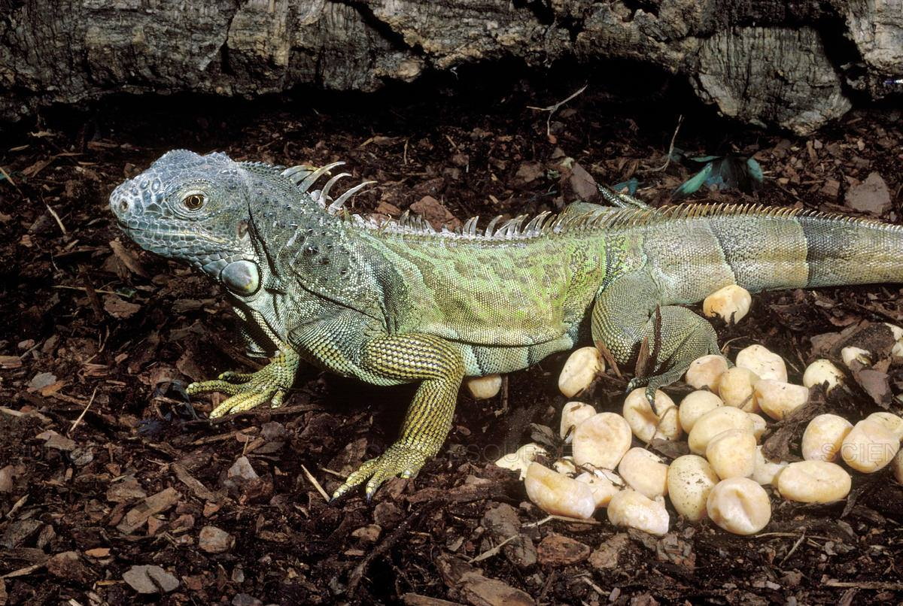

|
The Iguana is a genus of herbivorous lizards first discovered in 1768 by Austrian naturalist Josephus Nicolaus Laurenti. There are two species of lizard in this genus, the green iguana and the lesser antillean iguana. The green iguana is known as the household pet iguana, while the antillean iguana is native to the lesser antilles (Caribbean) and is an endagered species. The iguana's diet consists mostly of varied green veggies and fruits. It is recommended to have a 2:1 ratio in Calcium to Phosphorus to promote normal bone growth. In some cases iguanas might also eat insects or other form of animal protein such as eggs, but in very rare cases. |
 |
|  |
Iguanas can range in size from 1.5 to 1.8 meters in length including tail. Their scales can range in type depending on their body areas. They have keen vision and can see things in more detail at a very long distance. This allows them to navigate very crowded forests to look for food and also to communicate with other iguanas as they communicate via visual cues. The iguana also possesses a parietal eye, located in his head that helps regulate the illumination and send signals to identify the change in day and night. Iguanas also have a higher bite force compared to carnivorous lizards to forage through vegetation for food. They can live up to 25 years. |
|
Iguanas naturally live in dense forests and vegetation in southern Mexico, central Brazil, Dominican Republic, Paraguay, Bolivia and the Caribbean. They have also been introduced in many other regions by colonizers and even natural weather effects like washing ashore via tornadoes. |
 |
|  |
Male iguanas will secrete a scent from their thighs to attract females. Female iguanas may lay from 20 to 70+ eggs once per year during a nesting period. They also do not protect the nesting burrow after planting the eggs. Eggs will begin to hatch after 10 to 15 weeks of incubation. After hatching juvenile iguanas will look like adult females and lacking dorsal spines until they have grown older. They will also stay in familial groups for the first years of their lives. Iguanas are also sexually dimorphic, as male iguanas have larger and thicker dorsal spines compared to females. |
If you wish to see Iguanas in Portugal in natural captivity:
|
"Iguana " is the name of an eletronic song by Italian eletronic music producer and DJ Mauro Picotto, which was also remixed by Blank & Jones the popular german eletronic duo. |